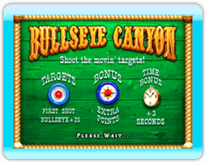
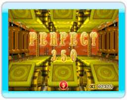

Ronde 1

Elle commence avec 20 secondes qui diminuent jusqu’à zéro. En tirant des horloges-primes, vous augmentez le temps alloué pour cette ronde seulement. Chaque cible a une valeur prédéterminée qui apparaît avant le début de chaque partie. Le temps supplémentaire de la Ronde 2 dépend de la qualité de votre pointage.
Ronde 2
Elle commence avec 15 secondes, plus le temps supplémentaire que vous avez obtenu durant la Ronde 1. Les cibles bougent plus rapidement et les cibles en prime apparaissent au hasard pour permettre aux joueurs de gonfler leur pointage.
Parfait boni

Chaque partie comporte un parfait boni, comme le défi de tirer 3 bouteilles sur 3 dans le Saloon Shoot. Dans les jeux de paires, comme le Balloon Wheel, les couleurs doivent correspondre afin d’obtenir le parfait boni. Dans d’autres parties, comme le Bullseye Canyon, les joueurs doivent atteindre le centre de la cible du premier coup pour obtenir le parfait boni. Lorsqu’un joueur obtient le parfait boni, le jeu affiche le graphique du parfait boni.
Ronde boni
Chaque parc d’attractions possède une ronde boni différente : Bonus Wheel à Arcadia, Clown Drown à Dreamland et Dunk Tank à Lagoon Park. Le joueur doit obtenir un pointage d’au moins 15 000 points au total pour les quatre parties dans un parc pour atteindre la ronde boni.